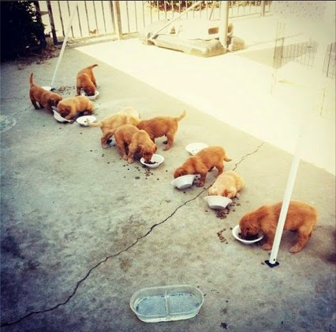

<!doctype html> <html lang="en">
<head>
  <meta charset="utf-8">

  <title>Parallelization with AMPL</title>

  <meta name="author" content="Victor Zverovich">

  <meta name="apple-mobile-web-app-capable" content="yes" />
  <meta name="apple-mobile-web-app-status-bar-style" content="black-translucent" />

  <meta name="viewport" content="width=device-width, initial-scale=1.0, maximum-scale=1.0, user-scalable=no">

  <link rel="stylesheet" href="../../common/reveal.js/css/reveal.css">
  <link rel="stylesheet" href="../../common/reveal.js/css/theme/beige.css" id="theme">

  <!-- For syntax highlighting -->
  <link rel="stylesheet" href="../../common/reveal.js/lib/css/zenburn.css">

  <!-- If the query includes 'print-pdf', include the PDF print sheet -->
  <script>
    if( window.location.search.match(/print-pdf/gi) ) {
      var link = document.createElement('link');
      link.rel = 'stylesheet';
      link.type = 'text/css';
      link.href = '../../common/reveal.js/css/print/pdf.css';
      document.getElementsByTagName('head')[0].appendChild(link);
    }
  </script>

  <style>
  body {background: white;}
  comment {display: none;}

  .reveal h1 {
    padding-bottom: 50px;
  }
  
  .reveal h1,
  .reveal h2 {
    font-size: 200%;
    text-transform: none;
    text-align: center;
    margin: 0;
  }
  .reveal section:first-of-type {
    text-align: center;
  }
  .reveal section {
    text-align: left;
  }
  
  .reveal p {
    margin-top: 10px;
    margin-bottom: 10px;
  }

  .reveal .MathJax_Display {
    margin-top: 20px;
    margin-bottom: 20px;
  }
  .reveal .plot {
    box-shadow: 0 0 20px #888888;
    margin-left: auto; margin-right: auto;
  }
  
  .reveal .transp-image {
    display: block;
    margin-left: auto;
    margin-right: auto;
    border: none;
    box-shadow: none;
  }
  
  /* Fix nohighlight styles. */
  .reveal pre code { display: block; background: #3F3F3F; color: #DCDCDC; }
  
  /* Fix image styles. */
  .reveal section img { border: none; box-shadow: none; }
  
  img.float-right {
    clear:right;
    float:right;
  }

  div .new { color: red; }

  /* D3 styles */
  .node circle {
    fill: #fff;
    stroke: steelblue;
    stroke-width: 1.5px;
  }

  .node {
    font: 20px sans-serif;
  }

  .link {
    fill: none;
    stroke: #ccc;
    stroke-width: 1.5px;
  }
  
  .chart rect {
    fill: steelblue;
  }

  .chart .bar text {
    fill: white;
    font: 20px sans-serif;
    text-anchor: end;
  }
  .chart .axis text {
    font: 20px sans-serif;
    fill: black;
  }
  .chart .x.axis text {
    font: 16px sans-serif;
  }

  .chart .axis path,
  .chart .axis line {
    fill: none;
    stroke: #000;
    shape-rendering: crispEdges;
  }
  .chart .y.axis line,
  .chart .y.axis path {
    display: none;
  }
  
  .img-with-text {
    display: inline-block;
    text-align: center;
    width: 200;
  }

  .img-with-text img {
    display: block;
    margin: 0 auto;
  }
  </style>

  <script type="text/javascript" charset="utf-8" src="MathBox.js/vendor/domready.js"></script>
  <script type="text/javascript" charset="utf-8" src="MathBox.js/build/MathBox-bundle.js"></script>

  <link href="MathBox.js/base.css" rel="stylesheet" type="text/css" media="screen">  
</head>

<body>
<script src="../../common/reveal.js/lib/js/head.min.js"></script>
<script src="../../common/reveal.js/js/reveal.js"></script>


<div class="reveal">
<!-- Any section element inside of this container is displayed as a slide -->
<div class="slides">

<section data-markdown data-separator="---">
<script type="text/template">
Parallelization with AMPL
=========================

Victor Zverovich

<small><a href="mailto:viz@ampl.com">viz@ampl.com</a></small>

AMPL Optimization Inc.

<br>

<small>University of Santiago de Compostela, <br>
January 18-19, 2016, Spain</small>

---

## Outline

* Measuring AMPL and solver time

* Parallelization at different levels

  * Application

  * AMPL and solver interface

  * Solver

* Limitations and issues

---

## Measure first

* Usually optimization takes most time, but occasionally an AMPL script or
  instantiation of an optimization problem may take long.
  
  
* So measure the time taken by different steps.

* If the bottleneck is in the AMPL code consider applying the recommendations
  from the talk on efficient modeling:

  * Separate model and data
  * Avoid inefficient set expressions
  * Prefer indexed commands to loops
  
---

## Measuring solver time

<dl>
<dt>`_solve_elapsed_time`</dt> <dd>elapsed seconds for most recent `solve` command</dd>
<dt>`_solve_system_time`</dt> <dd>system CPU seconds used by most recent `solve` command</dd>
<dt>`_solve_user_time`</dt> <dd>user CPU seconds used by most recent `solve` command</dd>
<dt>`_solve_time`</dt> <dd>`_solve_system_time` + `_solve_user_time`</dd>
<dt>`_total_solve_*_time`</dt> <dd>same as above but for all `solve` commands</dd>
</dl>

---

## Measuring AMPL time

<dl>
<dt>`_ampl_elapsed_time`</dt> <dd>elapsed seconds since the start of the AMPL process</dd>
<dt>`_ampl_system_time`</dt> <dd>system CPU seconds used by the AMPL process itself</dd>
<dt>`_ampl_user_time`</dt> <dd>user CPU seconds used by the AMPL process itself</dd>
<dt>`_ampl_time`</dt> <dd>`_ampl_system_time` + `_ampl_user_time`</dd>
</dl>

```nohighlight
ampl: model farmer-large.ampl;
CPLEX 12.6.1.0: optimal solution; objective 200079.8228
22285 dual simplex iterations (11356 in phase I)
ampl: print _ampl_time; 
0.14546299999999998
ampl: print _solve_time;
1.035517
```

---

## The times option

`times`: request a summary of the AMPL translator’s time and memory requirements.

```nohighlight
ampl: option times 1;
#                               incremental     total
#phase          seconds         memory          memory
...
### farmer-large.ampl:24(887)   solve ...
#compile        0               520             1636976
#genmod         0.014171        6723896         8360872
#merge          0.001726        524296          8885168
#collect        0.003971        6561880         15447048
#presolve       0.011304        5707840         21154888
#output         0.025391        0               21154888
CPLEX 12.6.1.0: optimal solution; objective 200079.8228
22285 dual simplex iterations (11356 in phase I)
#Total          0.068905
#execute        0.008729        1712944         22867832
```

---

## The gentimes option

`gentimes`: get processing times for individual model components.

```nohighlight
ampl: option gentimes 1;
ampl: model farmer-large.ampl;
...
##genmod times:
##seq      seconds    cum. sec.    mem. inc.  name
## 85            0            0            0  derstage
## 89            0            0            0  sstatus
## 91            0            0            0  stage
## 115            0            0        12848  area
## 117     0.005828     0.005828      2138456  sell
## 119            0     0.005828       262376  sellExcess
## 121            0     0.005828      1245848  buy
## 123     0.009979     0.015807      1190400  profit
## 125            0     0.015807            0  totalArea
## 127     0.000567     0.016374      1468440  requirement
## 129     0.000992     0.017366        76800  quota
## 131      0.00189     0.019256       328728  sellQuotaCrops
```

---

## Parallelization at different levels

* Application: multiple AMPL instances controlled from a
  client application. AMPL API can be particularly useful,
  so this will be covered in the API session.

* AMPL/solver interface

  * NEOS/Kestrel
  * Parampl

* Solver

  * Run several methods concurrently
  * One optimization algorithm makes use of multiple cores
    (often employed by interior-point methods)

---

## Parallelization on AMPL/Solver interface level

* Instead of using `solve` write the problem in the NL format:

```python
write b<filename>; # 'b' for binary
```

* Submit the problem to a, possibly remote, solver via the `shell`
  command or a user-defined function.

* Repeat.

* Retrieve the solution (`.sol` file) for each problem:

```python
solution <filename>;
```

* Existing systems: NEOS/Kestrel (cloud), parampl (local).

---

## NEOS Server for Optimization


http://www.neos-server.org/

* Cloud-based optimization solution
* Hosted by the Wisconsin Institutes for Discovery at the University of Wisconsin in Madison
* Free access to more than 60 state-of-the-art solvers
* Hundreds of thousands submissions per year with AMPL being the most popular format

---

## Kestrel

http://ampl.com/try-ampl/run-ampl-on-neos/

* AMPL "solver" that connects to NEOS
  

* Simple implementation: 300 LOC of Python and 3 small AMPL scripts

* `kestrelsub`: Submit a problem

* `kestrelret`: Retrieve results (blocking)

* `kestrelkill`: Terminate a submission

`kestrelsub`:

```python
option ampl_id (_pid);
write bkestproblem;
shell 'kestrel submit kestproblem';
```

---

## Parallelization with NEOS & Kestrel

* Solve requests for individual problems are submitted via the `kestrelsub` script.
* Request scheduling and optimization is managed by NEOS.
* The results are retrieved via the `kestrelret` script.

```python
# Submit requests.
for {s in SCEN} {
  problem Sub[s];
  commands kestrelsub;
}
# Retrieve the results.
for {s in SCEN} {
  problem Sub[s];
  include kestrelret;
  # Handle the results.
}
```

---

## Parampl

http://www.parampl.com/

* 
  Parallel solution of optimization problems on a single machine

* Takes advantages of multiple cores/processors

* Uses similar problem submission/result retrieval mechanism
  as Kestrel

* Portable

---

## Parampl

* Consists of a Python script and 2 small AMPL scripts

* `paramplsub`: Submit a problem

* `paramplret`: Retrieve results (blocking)

`paramplsub`:

```python
write ("bparampl_problem_" & $parampl_queue_id);
shell 'python -S parampl.py submit';
```

`paramplret`:

```python
shell 'python -S parampl.py retrieve';
if shell_exitcode == 0 then {
    solution ("parampl_problem_" & $parampl_queue_id & ".sol");
    remove ("parampl_problem_" & $parampl_queue_id & ".sol");
}
```

---

## Parallelization at the solver level

* CPLEX

  - parallel MIP
  - parallel barrier
  - launching multiple methods concurrently to solve a continuous problem (`concurrentopt`)

* Gurobi

  - parallel MIP
  - parallel barrier
  - solving primal and dual in parallel (`predual=2`)

* Other implementations of interior-point, MIP and NLP solution methods can also make use of multiple cores.

---

## Concurrent optimization in CPLEX

`concurrentopt`: launch multiple methods in parallel

* Opportunistic mode (`parallelmode = -1`)

  - thread 1: dual simplex
  - thread 2: barrier
  - [thread 3: primal simplex]
  - [thread 4 - N: added to make barrier parallel]

* Deterministic mode (`parallelmode = 1`)

  - thread 1: dual simplex
  - [thread 2 - N: barrier with crossover]

---

## Example

Concurrent optimization in CPLEX:

```nohighlight
ampl: model test.ampl
ampl: option cplex_options 'outlev=1';
ampl: option solver cplex;
ampl: solve;
CPLEX 12.6.1.0: outlev=1
Parallel mode: deterministic, using up to 4 threads for concurrent
optimization.
...
Dual simplex solved model.
CPLEX 12.6.1.0: optimal solution; objective 109271509.4
102855 dual simplex iterations (0 in phase I)
```

* CPLEX chose `concurrentopt` automatically in this example
* May need to set the algorithm manually if other parallelization method is employed.

---

## Artelys Knitro


General nonlinear solver providing variety of parallelization options:

* Parallel finite-difference gradients

* Parallel multistart

* Parallel basic linear algebra subroutine (BLAS)

* Parallel sparse linear system solves (via Intel MKL PARDISO)

---

## Issues

Synchronization overheads, different optimization paths

<div style="text-align: center;">
  <div class="img-with-text">
    
    <p>Theory</p>
  </div>
  <div class="img-with-text">
    
    <p>Practice</p>
  </div>
</div>

---

## Limits

<div style="text-align: center;">


<div>

Parallel speedup $ S(f, n) = \frac{1}{1 - f + f/n} $

* $f$ - parallelizable fraction of computation
* $n$ - number of processors

---

## Blocking

* 
  Both `kestrelret` and `paramplret` are blocking.

* Making them unblocking will allow processing the results
  of problems that finished earlier while other problems are
  still being solved.

* This will require splitting the result retrieval script into two,
  one to retrieve the id of the problem that has been solved and 
  another to retrieve the solution.

---

## To be continued

More on parallelization in

* the practical session

  - Benders' decomposition for stochastic programming
  - Solving subproblems in parallel using Parampl and Kestrel

* API session

---

## References

* Section A.21.4 "Built-in timing parameters" in the AMPL Reference Manual:
  http://ampl.com/BOOK/CHAPTERS/24-refman.pdf#page=44

* NEOS Server: http://www.neos-server.org/

* Elizabeth D. Dolan, Robert Fourer, Jean-Pierre Goux, Todd S. Munson, Jason Sarich.
  [Kestrel: An Interface from Optimization Modeling Systems to the NEOS Server](http://www.ampl.com/REFS/kestrel.pdf).
  INFORMS Journal on Computing. Vol. 20, No. 4, Fall 2008, pp. 525–538.

* Kestrel: http://ampl.com/try-ampl/run-ampl-on-neos/

---

## References

* Parampl: http://www.parampl.com/

* A. Olszak, A. Karbowski. Parampl: [A simple approach for parallel execution of AMPL programs](http://www.parampl.com/Parampl_PPAM2013.pdf). 
  10th International Conference On Parallel Processing and Applied Mathematics (PPAM 2013), Part II, LNCS 8385, pp. 86-94, 2014.  

* Artelys Knitro 10.0 User's Manual, Parallelism:
  http://bit.ly/1J2aTeq

* IBM ILOG AMPL User's Guide: http://ampl.com/BOOKLETS/amplcplex122userguide.pdf

---

## Questions?

</script>
</section>

</div>
</div>

<script>
  // Full list of configuration options available here:
  // https://github.com/hakimel/reveal.js#configuration
  Reveal.initialize({
    controls: true,
    progress: true,
    history: true,
    center: true,

    theme: Reveal.getQueryHash().theme, // available themes are in /css/theme
    transition: Reveal.getQueryHash().transition || 'default', // default/cube/page/concave/zoom/linear/fade/none

    // Parallax scrolling
    // parallaxBackgroundImage: 'https://s3.amazonaws.com/hakim-static/reveal-js/reveal-parallax-1.jpg',
    // parallaxBackgroundSize: '2100px 900px',

    math: {
      mathjax: 'https://cdnjs.cloudflare.com/ajax/libs/mathjax/2.7.1/MathJax.js',
      config: 'TeX-AMS-MML_HTMLorMML'  // See http://docs.mathjax.org/en/latest/config-files.html
    },

    // Optional libraries used to extend on reveal.js
    dependencies: [
      { src: '../../common/reveal.js/lib/js/classList.js', condition: function() { return !document.body.classList; } },
      { src: '../../common/reveal.js/plugin/markdown/marked.js', condition: function() { return !!document.querySelector( '[data-markdown]' ); } },
      { src: '../../common/reveal.js/plugin/markdown/markdown.js', condition: function() { return !!document.querySelector( '[data-markdown]' ); } },
      { src: '../../common/reveal.js/plugin/highlight/highlight.js', async: true, callback: function() { hljs.initHighlightingOnLoad(); } },
      { src: '../../common/reveal.js/plugin/zoom-js/zoom.js', async: true, condition: function() { return !!document.body.classList; } },
      { src: '../../common/reveal.js/plugin/notes/notes.js', async: true, condition: function() { return !!document.body.classList; } },
      { src: '../../common/reveal.js/plugin/math/math.js', async: true }
    ]
  });
  //Reveal.addEventListener('slidechanged', function(event) {
  //  document.getElementById("logo").style.visibility = Reveal.isFirstSlide() ? 'hidden' : 'visible';
  //});
</script>

<!-- Google Analytics -->
<script type="text/javascript">
  var _gaq = _gaq || [];
  _gaq.push(['_setAccount', 'UA-20116650-1']);
  _gaq.push(['_trackPageview']);
  (function() {
    var ga = document.createElement('script'); ga.type = 'text/javascript'; ga.async = true;
    ga.src = ('https:' == document.location.protocol ? 'https://ssl' : 'http://www') + '.google-analytics.com/ga.js';
    var s = document.getElementsByTagName('script')[0]; s.parentNode.insertBefore(ga, s);
  })();
</script>
</body>
</html>
